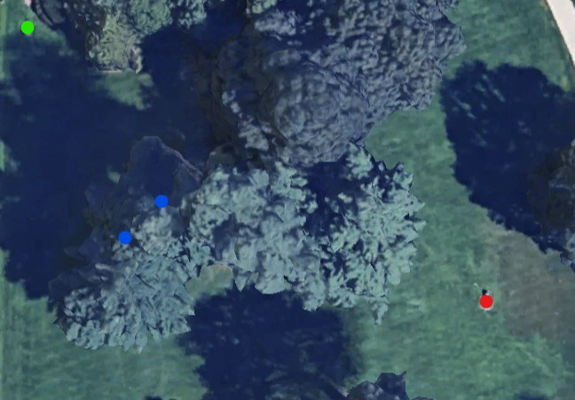

Stats
Par: 6
Distance: 202 ft
Hole Description
Starting from on square pad behind the bushes by the road, there is an immeadiate mandatory to the left and mandatory to the right of of the to middle trees ahead, so you must throw between them. Then the target is the bench up to the left.
Map key: green dot starting box, red dot target, blue dot mandatory.